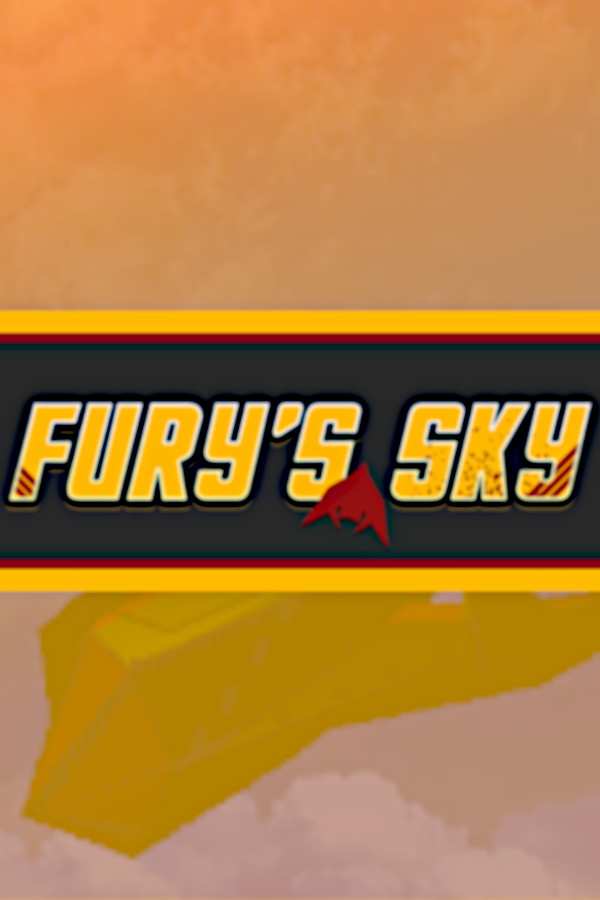

Fury's Sky
Fury's Sky
Details
|  | |
| Playtime | Not Played |
| Last Activity | Never |
| Added | 23/04/2020 |
| Modified | Never |
| Completion Status | Not Played |
| Source | Steam |
| Platform | PC |
| Release Date | 11/08/2019 |
| Community Score | 67 |
| Critic Score | |
| User Score | |
| Genre | Action Early Access Indie Simulation |
| Developer | Proud Cipher Media Group |
| Publisher | Proud Cipher Media Group |
| Feature | Single Player |
| Links | PCGamingWiki Community Hub Discussions Guides Store Page News |
Description
1000 years have passed since the time of the Hero, Sir Levin. Wielding a mysterious energy, and advanced flying machines capable of utilizing it, Levin's forces quashed the warring Nations of Old, and brought peace to the new World-Nation. But it was not to last. As time passed, the Nations of Old resurfaced, bearing the energy that been used against them in ages past. They shattered the territory of the World-Nation into pieces, carving swathes of the land for themselves. However, they did not do this on their own. Fearing the coming of a second Hero, the Nations turned to mercenaries to act on their behalf and carry the pretense of global peace.
One such mercenary company was the Yellow Jackets. Acting as the regional army and air force for the great Kingdom of Liefton, the Yellow Jackets bore a code of honor atypical of the cutthroat bands typically employed by sovereign nations. Their commitment to virtue, and their growing influence in the region, lent themselves many enemies among rival nations and mercenaries alike.
This is their story.

Fury's Sky is a game both unique and familiar. As you fly through the main campaign, experience finely tuned flight action inspired by genre classics, and utilize brand new mechanics. Manage an unlimited pool of energy to power your weapons, and employ a powerful airbrake to stop yourself and quickly change direction, or get a bead on targets.

The game will feature 8 planes to choose from, with a complement of swappable weapons for each, totaling at 42. Each plane represents a distinct playstyle, from zipping past enemies in the speedy yet unwieldy Locust, to decimating enemies with the powerful yet sluggish Condor, to getting up close and personal with the potent yet fragile Hatchet. With all of this customization, you're sure to find something you like!

The campaign will test your flight skills with anything and everything. From escorting a transport through a canyon, to destroying an enemy base, to fighting a massive battleship on your home turf, the game will continue to throw new things at you and force you to adapt. Are you ready?
One such mercenary company was the Yellow Jackets. Acting as the regional army and air force for the great Kingdom of Liefton, the Yellow Jackets bore a code of honor atypical of the cutthroat bands typically employed by sovereign nations. Their commitment to virtue, and their growing influence in the region, lent themselves many enemies among rival nations and mercenaries alike.
This is their story.
Fury's Sky is a game both unique and familiar. As you fly through the main campaign, experience finely tuned flight action inspired by genre classics, and utilize brand new mechanics. Manage an unlimited pool of energy to power your weapons, and employ a powerful airbrake to stop yourself and quickly change direction, or get a bead on targets.
The game will feature 8 planes to choose from, with a complement of swappable weapons for each, totaling at 42. Each plane represents a distinct playstyle, from zipping past enemies in the speedy yet unwieldy Locust, to decimating enemies with the powerful yet sluggish Condor, to getting up close and personal with the potent yet fragile Hatchet. With all of this customization, you're sure to find something you like!
The campaign will test your flight skills with anything and everything. From escorting a transport through a canyon, to destroying an enemy base, to fighting a massive battleship on your home turf, the game will continue to throw new things at you and force you to adapt. Are you ready?